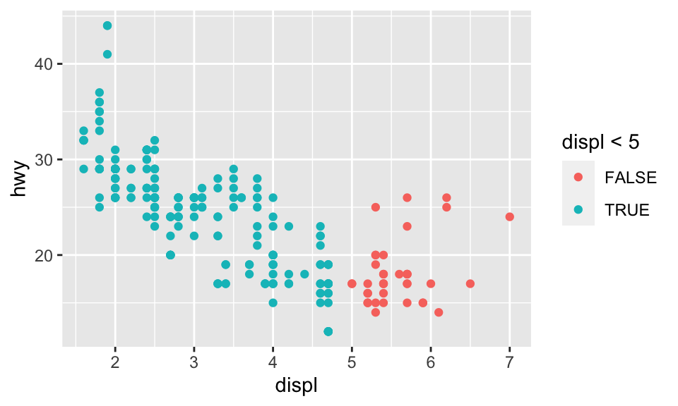
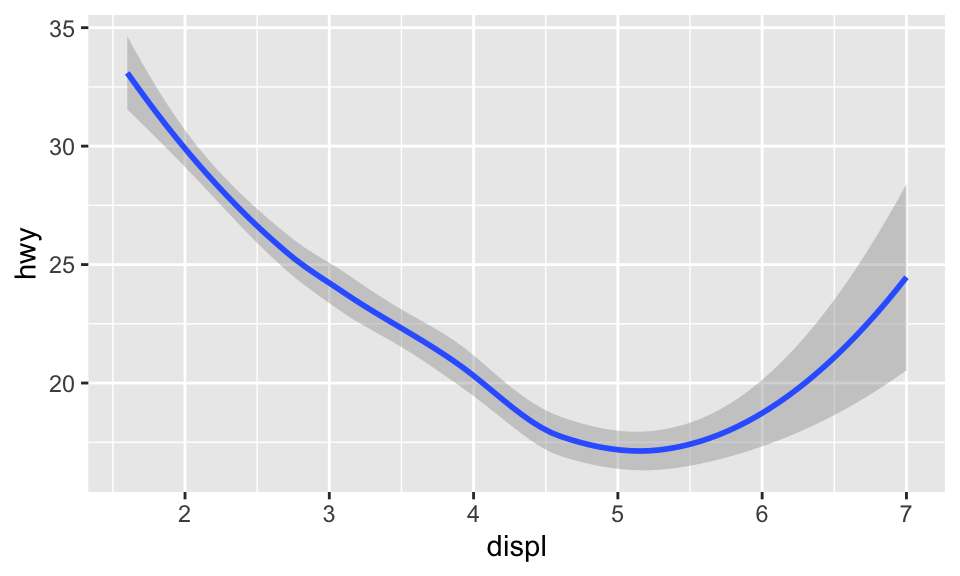
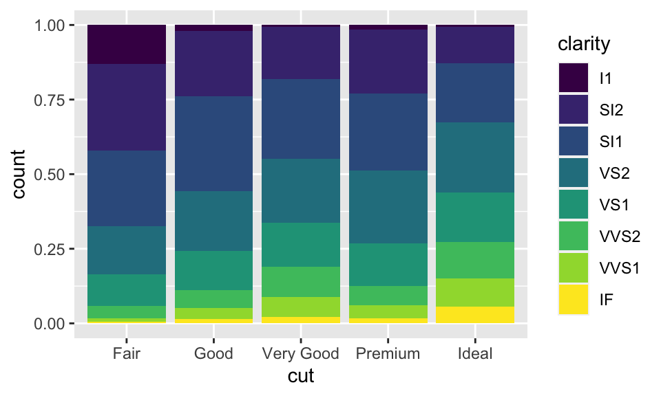
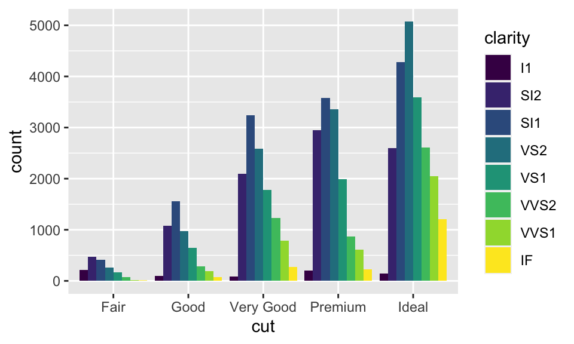

7 以 ggplot2 進行資料視覺化
本部分（第 7、9、10 章）要談的是資料探索。本章為 Wickham and Grolemund (2016) 第 1 章內容。

Figure 7.1: Data exploring.
前置作業
此章的目的則是要學習以 ggplot2 進行簡單的資料視覺化。我們先要載入 tidyverse，其包含了 ggplot2。在 Console 輸入：
library(tidyverse)## ── Attaching packages ─────────────────────────────────────── tidyverse 1.3.1 ──## ✓ ggplot2 3.3.5 ✓ purrr 0.3.4
## ✓ tibble 3.1.5 ✓ dplyr 1.0.7
## ✓ tidyr 1.1.4 ✓ stringr 1.4.0
## ✓ readr 2.0.1 ✓ forcats 0.5.1## ── Conflicts ────────────────────────────────────────── tidyverse_conflicts() ──
## x dplyr::between() masks data.table::between()
## x dplyr::filter() masks stats::filter()
## x dplyr::first() masks data.table::first()
## x purrr::flatten() masks jsonlite::flatten()
## x readr::guess_encoding() masks rvest::guess_encoding()
## x dplyr::lag() masks stats::lag()
## x dplyr::last() masks data.table::last()
## x purrr::transpose() masks data.table::transpose()7.1 創建一個 ggplot
引擎大的車子相較於引擎小的車子使用更多的汽油嗎？
我們可以使用 tidyverse 中 mpg 這個 data frame 來嘗試回答這個問題。
mpg## # A tibble: 234 × 11
## manufacturer model displ year cyl trans drv cty hwy fl class
## <chr> <chr> <dbl> <int> <int> <chr> <chr> <int> <int> <chr> <chr>
## 1 audi a4 1.8 1999 4 auto… f 18 29 p comp…
## 2 audi a4 1.8 1999 4 manu… f 21 29 p comp…
## 3 audi a4 2 2008 4 manu… f 20 31 p comp…
## 4 audi a4 2 2008 4 auto… f 21 30 p comp…
## 5 audi a4 2.8 1999 6 auto… f 16 26 p comp…
## 6 audi a4 2.8 1999 6 manu… f 18 26 p comp…
## 7 audi a4 3.1 2008 6 auto… f 18 27 p comp…
## 8 audi a4 quattro 1.8 1999 4 manu… 4 18 26 p comp…
## 9 audi a4 quattro 1.8 1999 4 auto… 4 16 25 p comp…
## 10 audi a4 quattro 2 2008 4 manu… 4 20 28 p comp…
## # … with 224 more rows其中，displ 為引擎的大小，單位是公升數；hwy 為汽車在高速公路上的燃油效率，以每加侖英里（miles per gallon, mpg）為單位，較低的話代表同樣的里程得要使用更多的油。
我們可以把 displ 放在 \(x\) 軸，而把 hwy 放在 \(y\) 軸，創建一個 ggplot：
ggplot(data = mpg) + geom_point(mapping = aes(x = displ, y = hwy))
ggplot() 可以創造一個座標系統，而我們可以在上面加上圖層。其中，第一個引數為此圖所要使用的 dataset，例如此處為 ggplot(dataset=mpg)，但這時候不會得到任何東西，只有一張空白的圖。而我們可以再加上其他圖層，如使用 geom_point()，可以用來繪製散佈圖（scatterplot）。而 geom_point() 函數有引數 mapping，與 aes() 搭配使用，可以讓我們指定 \(x\) 軸與 \(y\) 軸分別要是什麼變數。
此外，從此圖看起來，引擎大小與燃油效率呈現負向關係，即引擎更大的車，使用更多油。
7.2 The Layered Grammar of Graphics
ggplot2 的語法大致如下，層層堆疊各種函數。在 geom 中，除了 mapping=aes()，我們還可以加上其他種類的 stat 與 “position adjustment”；若有需要，也可以加上不同的「座標系統」與 “facet function”。
ggplot(data = <DATA>) +
<GEOM_FUNCTION>(
mapping = aes(<MAPPINGS>),
stat = <STAT>,
position = <POSITION>)+
<COORDINATE_FUNCTION> +
<FACET_FUNCTION>以下將逐一簡介這些參數（以 <> 包圍的字串）的使用方式。
7.3 Aesthetic Mappings
我們可以新增第三個變數，例如 mpg 中的 class 到兩向度的散佈圖，讓上面的點映射到 aesthetic。Aesthetic 是一種物件的視覺性質，包含了點的 color、size、shape 等。使用 aesthetic 在 aes() 中使用 aesthetic.name = variable.name 即可，而如果我們不想要旁邊的圖例，可以使用 show.legend = FALSE，如：
# ggplot(data = mpg) +
# geom_point(mapping = aes(x = displ, y = hwy, color = class), show.legend = FALSE)
ggplot(data = mpg) + geom_point(mapping = aes(x = displ, y = hwy, color = class))此外，如果我們映射 color 到一個邏輯條件，則如：
ggplot(data = mpg) + geom_point(mapping = aes(x = displ, y = hwy, color = displ < 5))
我們也可以使用 size = class。但要注意的是此時會出現 Warning，因為把一個無序的變數 class 映射到一個有序的 aesthetic size 並不是一個好方法：
ggplot(data = mpg) + geom_point(mapping = aes(x = displ, y = hwy, size = class))## Warning: Using size for a discrete variable is not advised.
我們也可以映射 class 到 alpha 或 shape，分別代表透明度與形狀，但也都會出現 Warning：
ggplot(data = mpg) + geom_point(mapping = aes(x = displ, y = hwy, alpha = class))## Warning: Using alpha for a discrete variable is not advised.ggplot(data = mpg) + geom_point(mapping = aes(x = displ, y = hwy, shape = class))## Warning: The shape palette can deal with a maximum of 6 discrete values because
## more than 6 becomes difficult to discriminate; you have 7. Consider
## specifying shapes manually if you must have them.## Warning: Removed 62 rows containing missing values (geom_point).我們也可以從 geom 手動選擇 aesthetic properties，例如我們可以在 geom() 中加上 color = "blue"，讓所有點都變成藍色：
ggplot(data = mpg) + geom_point(mapping = aes(x = displ, y = hwy), color = "blue")這樣的話，就只是改變顏色，顏色並未傳達更多資訊。不過，事實上 ggplot2 也可以手動設置 aesthetic，不過此處從略。
7.4 Facets
注意：類別變數才能繪製成 facets！
除了把變數映射到 aesthetics，我們也可以把類別變數繪製成 facets，即分別繪製資料不同的子集。要繪製 facets，我們可以使用 facet_wrap()，其第一個引數是一個 formula，即 ~ 變數名稱。此外，也可以 nrow 或 ncol 來指定要有幾個 rows 或 columns。如我們要根據 class 來繪製 facets，而排成兩個 rows 的形式，即：
ggplot(data = mpg) +
geom_point(mapping = aes(x = displ, y = hwy)) +
facet_wrap(~ class, nrow = 2)
如果我們要把 facets 畫成兩個變數的組合，那就必須使用 facet_gird()，其語法如 facet_grid(row ~ col)。以下的例子，因為 drv 共有三種值：4、f、r，而 cyl 共有四種值：4、5、6、8，所以：
ggplot(data = mpg) +
geom_point(mapping = aes(x = displ, y = hwy)) +
facet_grid(drv ~ cyl)
如果 row 或 column 其中一者不想要有變數，可以使用 facet_grid()。
7.5 幾何物件
Geom 是一種圖用來表示資料的幾何物件。例如，bar charts 使用 bar geoms，line charts 使用 line geoms，boxplots 使用 boxplot geoms 等。
要改變圖的 geom，即改變 ggplot() 所加的 geom function，例如我們把剛剛的 geom_point() 改成 geom_smooth 的話將會得到：
# 對於 geom_smooth() 中的 method 與 formula 用法可見其文檔
ggplot(data = mpg) +
geom_smooth(mapping = aes(x = displ, y = hwy), method = 'loess', formula = 'y ~ x')
我們也可以設置 aesthetic。雖然不能設置線的 shape，但可以設定線的 linetype。例如，我們可以根據變數 drv 來繪製三條不同的線：
ggplot(data = mpg) +
geom_smooth(mapping = aes(x = displ, y = hwy, linetype = drv),
method = "loess", formula = "y ~ x")
或者也可以疊加兩種 geom：
ggplot(data = mpg) +
geom_smooth(mapping = aes(x = displ, y = hwy, color = drv, linetype = drv),
method = "loess", formula = "y ~ x") +
geom_point(mapping = aes(x = displ, y = hwy, color = drv))
如果把引數放在 ggplot() 中，則會被視為 global mapping，將會套用到圖中的所有 geom；而放在 geom() 中則會被視為 local mapping，只會套用到該 geom。所以上述的程式碼也可以簡化為：
ggplot(data = mpg, mapping = aes(x = displ, y = hwy, color = drv)) +
geom_smooth(aes(linetype = drv), method = "loess", formula = "y ~ x") +
geom_point()
7.6 統計轉換
diamonds 是 ggplot2 中的一個 dataset，約有 54000 顆鑽石的資料，包含 carat、cut、color、clarity、depth、table、price 等變數。使用 geom_bar() 可以依據某個變數畫出長條圖（bar chart），例如我們想要知道各種 cuts 到底有分別有多少鑽石，可以：
ggplot(data = diamonds) + geom_bar(mapping = aes(x = cut))
在此，\(x\) 軸為 cut，是 diamonds 中的變數；\(y\) 軸為 count，並非 diamonds 中的變數，而是自動計算在各個 cut 中鑽石的數量。某些圖會計算新的變數然，例如：
- 長條圖、直方圖（histogram）或 frequency polygons 都會計算個數。
- Smoothers 會適配模型然後畫出預測。
- Boxplots 會計算分佈。
用來計算新的值的演算法稱之為 stat，為 statistical transformation 的簡稱。例如以 ?geom_bar 查看 geom_bar() 的幫助頁面，會發現其使用 stat_count()。因為每個 geom 都有一個預設的 stat，反之亦然，所以我們可以把 geom 與 stat 交換使用。也因此，如果把上圖的 geom_bar() 換成 stat_count() 也會到相同的結果。
什麼時候需要明確地使用 stat 呢？
想要替換預設的 stat 的時候。
想要換原本的 mapping 時。
ggplot(data = diamonds) +
geom_bar(
mapping = aes(x = cut, y = ..prop.., group = 1)
)- 想要使用其他的 statistical transformation 的時候。例如使用
stat_summary()，其會對每個x都 summarizes 其y。
ggplot(data = diamonds) +
stat_summary(
mapping = aes(x = cut, y = depth),
fun.min = min,
fun.max = max,
fun = median
)
7.7 Position Adjustment
想要為長條圖著色，除了使用 color，還可以使用 fill，兩者的效果也不同：
ggplot(data = diamonds) +
geom_bar(mapping = aes(x = cut, color = cut))ggplot(data = diamonds) +
geom_bar(mapping = aes(x = cut, fill = cut))如果 fill 指定為另一個變數的話，就會自動變成「堆疊」的形式，如：
ggplot(data = diamonds, mapping = aes(x = cut, fill = clarity)) +
geom_bar()這種堆疊是透過位置調整（position adjustment）進行的。position 預設為 position="stack"，而我們還能把 position 指定成其他三種選項：identity、dodge 與 fill：
position = "identity"：用在 bar chart 上效果有點像stack，但差別在調整透明度後可以看出來（即alpha = 1/5）；雖然還是不明顯，但差別在identity的各個物件是會相互堆疊的。例如在下圖中，調整透明度明明應該所有物件的透明度都相同，但越靠下的部分透明度顯然越低，這就是因為越靠下的部分有越多個物件重疊在一起，使得圖形顯得較不透明。
ggplot(data = diamonds, mapping = aes(x = cut, fill = clarity)) +
geom_bar(alpha = 1/5, position = "identity")position = "fill"：依據指定的變數（此數為clarity）堆疊，差別在高度相同，所以便於我們比較組間的比例差別。
ggplot(data = diamonds, mapping = aes(x = cut, fill = clarity)) +
geom_bar(position = "fill")
position = "dodge"：以此例而言，即是對於每個不同的cut，都分別把其各個clarity展現在逐一呈現，而非用堆疊的方式。
ggplot(data = diamonds, mapping = aes(x = cut, fill = clarity)) +
geom_bar(position = "dodge")
此外，當然還有其他 position 的引數可用，例如 position = "jitter"，其在 bar chart 中沒什麼用，但在散佈圖中有大用。回憶節 7.1 的散佈圖：
ggplot(data = mpg) + geom_point(mapping = aes(x = displ, y = hwy))
事實上，mpg 明明有 234 個觀察值，如：
str(mpg)
# tibble [234 × 11] (S3: tbl_df/tbl/data.frame)
# ...但上面的散佈圖卻只有顯示 126 個點，為什麼？因為 overplotting！有些點的座標相同，所以相互覆蓋了。設置 position = "jitter" 可以解決這個問題，這會在每個點加入一點點 random noise，排除 overplotting 的問題。
ggplot(data = mpg, mapping = aes(x = displ, y = hwy)) +
geom_point(position = "jitter")7.8 座標系統
除了前面使用的笛卡兒座標系統，還有其他有用的座標系統：
coord_flip()：繪製旋轉 90 度的直角坐標，如：
ggplot(data = mpg, mapping = aes(x = class, y = hwy)) + geom_boxplot()ggplot(data = mpg, mapping = aes(x = class, y = hwy)) + geom_boxplot() + coord_flip()coord_quickmap()：繪製有正確方位比例的地圖4，如：
nz <- map_data("nz")
ggplot(nz, aes(long, lat, group = group)) +
geom_polygon(fill = "white", color = "black")
ggplot(nz, aes(long, lat, group = group)) +
geom_polygon(fill = "white", color = "black") + coord_quickmap()coord_polar()：繪製極座標圖（polar coordinates），結合 bar char 與 Coxcomb chart，如：
bar <- ggplot(data = diamonds) +
geom_bar(mapping = aes(x = cut, fill = cut), show.legend = FALSE, width = 1) +
theme(aspect.ratio = 1) + labs(x = NULL, y = NULL)
bar + coord_polar()coord_fixed：因為人對與 45 度線的差異感受最明顯，而coord_fixed()可以讓geom_abline()（用以產生 reference lines 的 geom）產生的線為 45 度，如：
p <- ggplot(data = mpg, mapping = aes(x = cty, y = hwy)) +
geom_point() + geom_abline()
p + coord_fixed() # 如果不加 coord_fixed()，比例將會跑掉。
7.9 標籤
labs() 能使我們為圖加上標題、註解或更改 x 軸、y 軸的名稱，如：
ggplot(data = mpg, mapping = aes(x = class, y = hwy)) +
geom_boxplot() +
coord_flip() +
labs(y = "Highway MPG",
x = "Class",
title = "Highway MPG by car class",
subtitle = "1999-2008",
caption = "Source: http://fueleconomy.gov")
參考文獻
另有
coord_map()，功能與coord_quickmap()類似。coord_map()預設使用麥卡托投影法（Mercator projection）。而兩者的差別在coord_quickmap為coord_map()的近似，忽略了地球在不同經緯度比例的曲度差異，因此運行速率較快，但也稍微不準確。↩︎